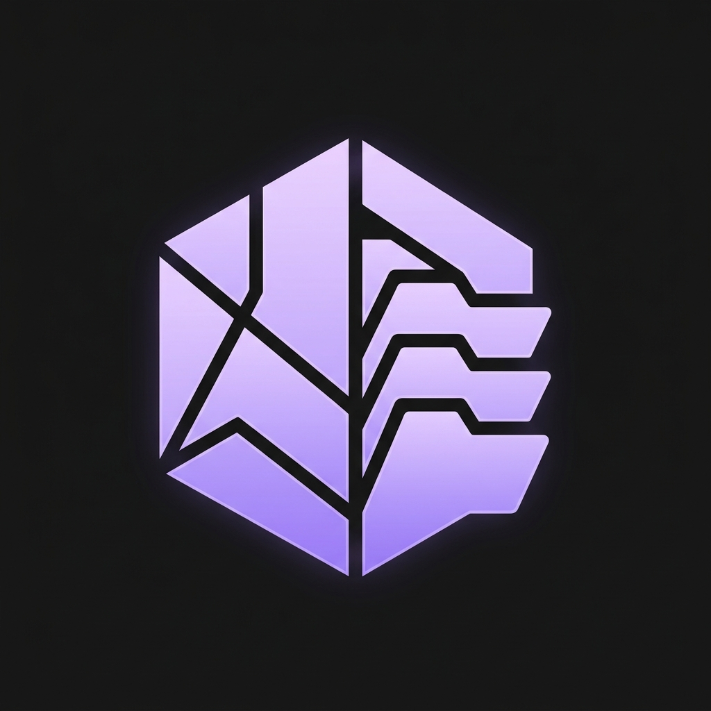
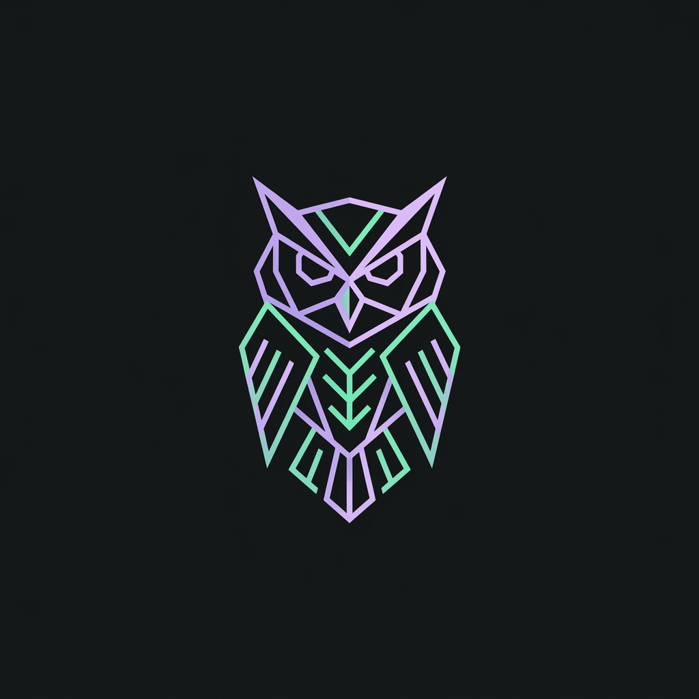
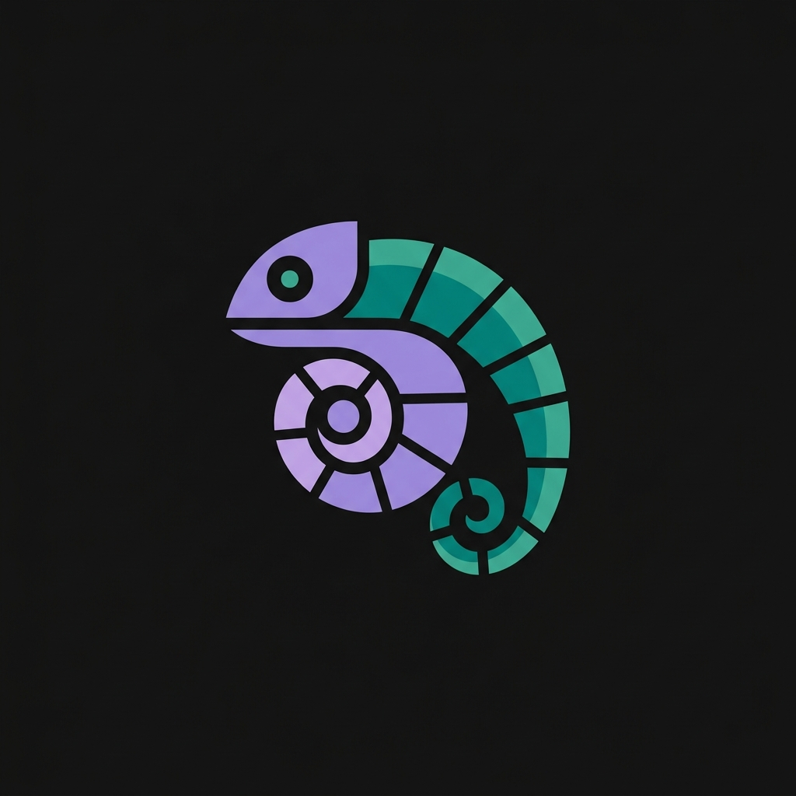

Didesain khusus dengan standar tech branding kelas dunia (setara Linear, Raycast, GitLab, & Vercel) — representasi arsitektural microservices & maskot hewan cerdas.

Service Catalog HEXAGONAL REGISTRYBentuk Folder Masa Depan: Menggabungkan struktur heksagonal modular dengan 3 tab folder bersusun di sisi kanan. Sisi kiri membentuk prisma kristal komputasi. Melambangkan repositori microservices yang tersusun rapi dan kokoh.

Service Catalog 360° ALL-SEEING DISCOVERYSimbol Kebijaksanaan & Penjaga Arsip: Garis vektor tajam dengan kombinasi warna lavender dan mint-emerald. Burung hantu memiliki penglihatan malam 360° untuk observasi & cataloging inventori runtime 24/7 tanpa henti.

Service Catalog DYNAMIC ORCHESTRATIONSimbol Adaptabilitas & Skalabilitas: Pola spiral emas (Fibonacci) dari tubuh bunglon yang melingkar. Melambangkan service catalog yang dinamis, beradaptasi dengan perubahan microservices, dan mengorkestrasi alur sistem secara mulus.
Pilih antara Opsi 1 (Hex-Folder Crystal), Opsi 2 (Sentinel Cyber Owl), atau Opsi 3 (Nautilus Chameleon), dan saya akan langsung memasangnya secara otomatis ke header halaman login!